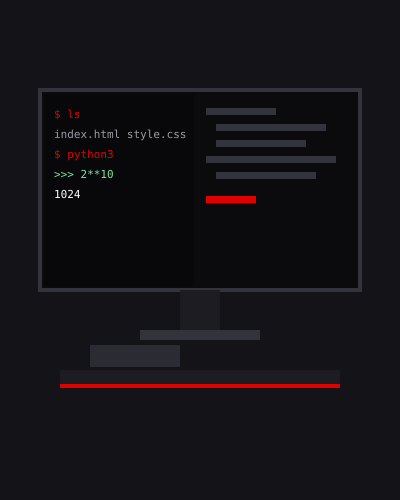

Webs estáticas accesibles
Páginas rápidas, semánticas y responsive, sin dependencias innecesarias.
SISTEMA / USUARIO / SESIÓN_01
Entender la máquina, no solo usarla.
Alumno de 1º DAM en el IES Simarro. Tres años de informática: apasionado de la programación y con una obsesión por lo que pasa por debajo de la interfaz.
01 / Sobre mí

He estudiado informática durante 3 años. En ese tiempo he aprendido diversidad de conceptos. Gracias a ellos, he podido desarrollar: una web corporativa para una empresa, aplicaciones de consola simples y un montón de pequeños proyectos que, sumados, me han enseñado más que cualquiera de ellos por separado.
Lo que me motiva en mi carrera de informático es que: no me basta con que funcione. Quiero saber qué hace el sistema operativo cuando pido memoria, qué viaja por la red cuando pulso Enter y por qué un programa se cae por un byte mal colocado.
«Cualquiera aprende a usar una herramienta. Yo quiero saber cómo se construye bit a bit.»
| Centro | IES Doctor Lluis Simarro |
|---|---|
| Ciclo | 1º — Desarrollo de Aplicaciones Multiplataforma |
| Base | Programación, sistemas, marcas, lenguajes de marcado |
| En marcha | Conocimientos sesgados de nivel de técnico |
/ Habilidades
Una autoevaluación honesta. El radar se dibuja al entrar en pantalla; los números son mi nivel real, no el deseado.
Páginas rápidas, semánticas y responsive, sin dependencias innecesarias.
Herramientas pequeñas con validación de datos y mensajes de error claros.
Apuntes y guías en Markdown, versionados con Git, para que otros lo entiendan.
| Antes | SMX (Sistemas Microinformáticos y Redes) — IES Doctor Lluís Simarro |
|---|---|
| Ahora | 1º DAM (Desarrollo de Aplicaciones Multiplataforma) — IES Doctor Lluís Simarro |
| Por mi cuenta | Lenguaje C, ensamblador, protocolos de red y línea de comandos |